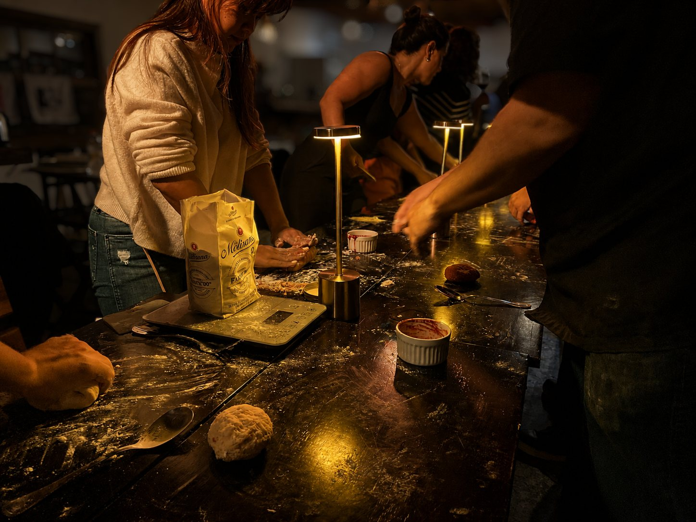
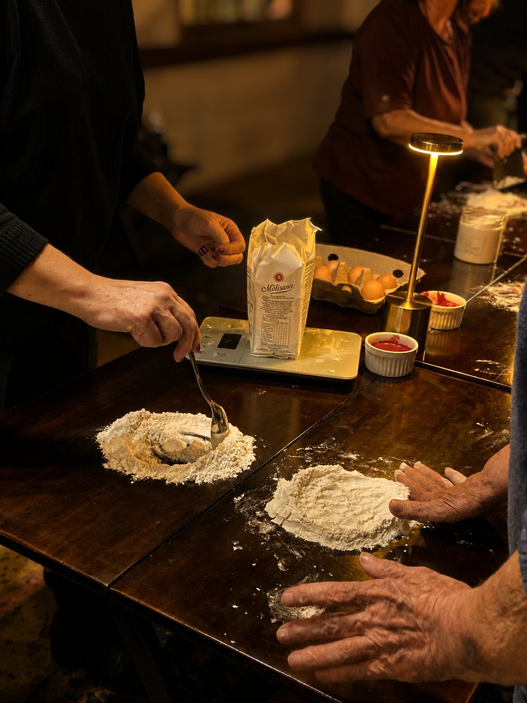
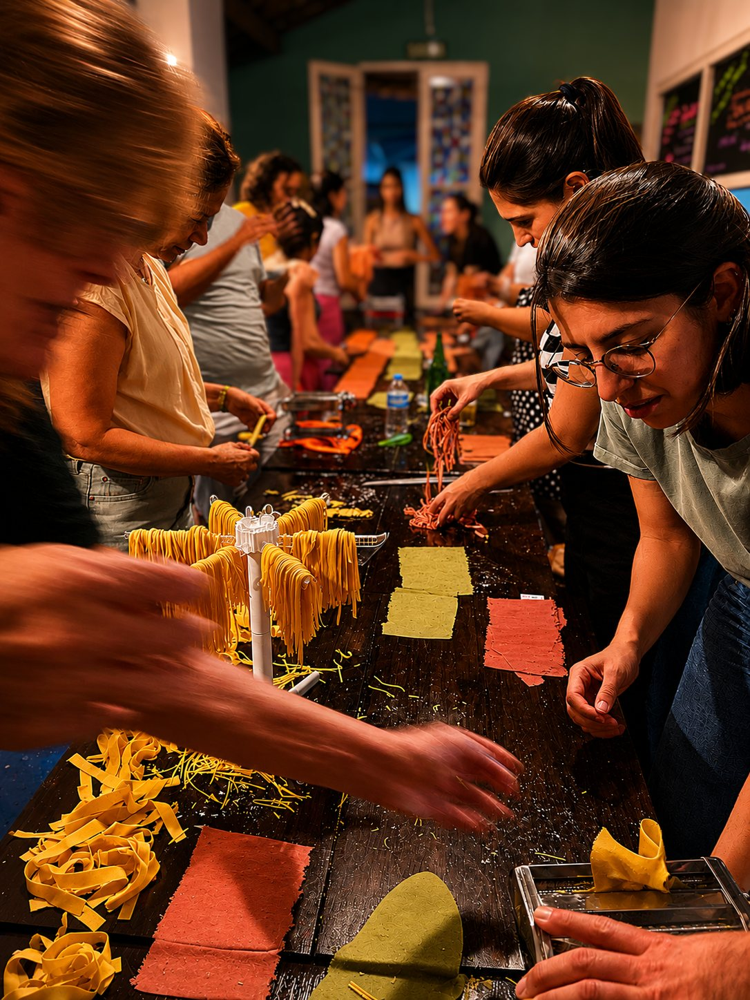
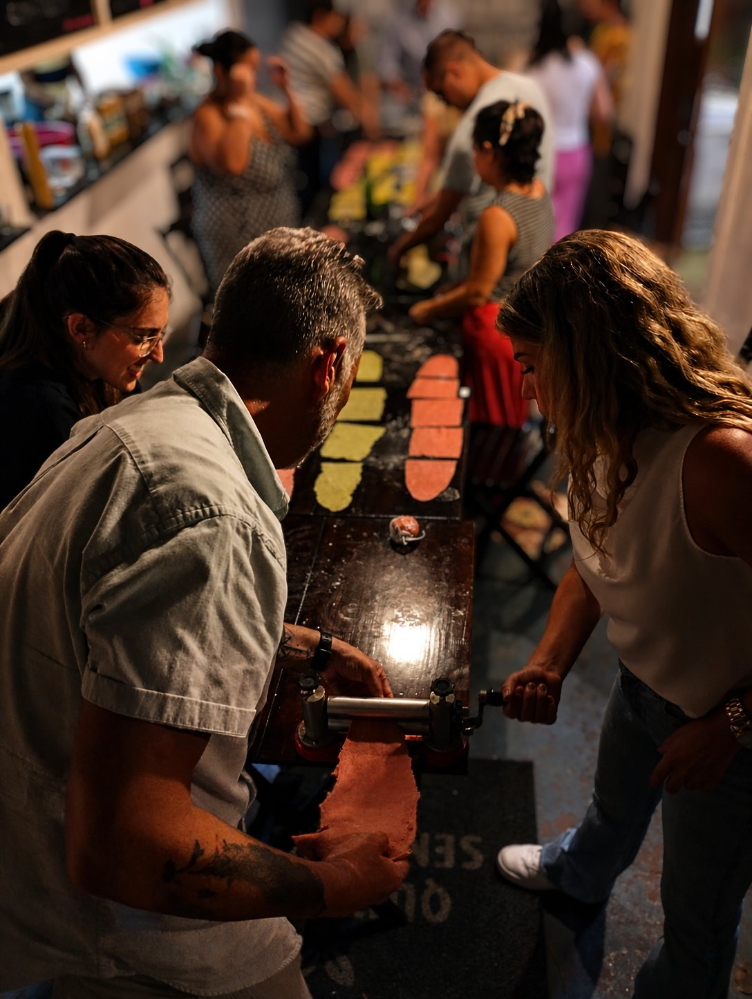
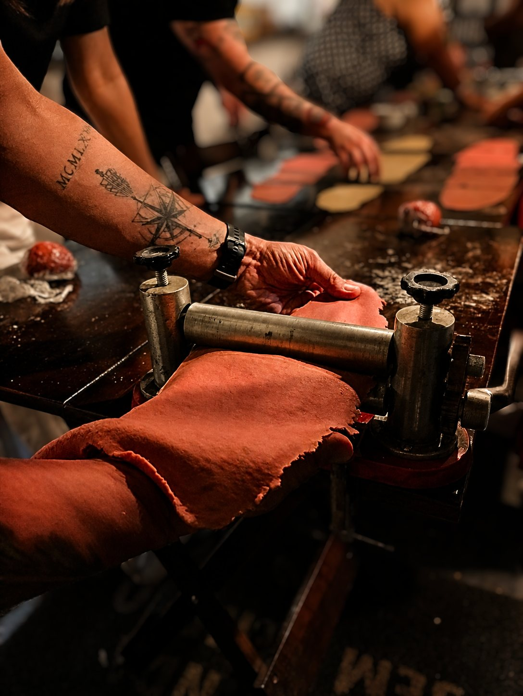

Mão na massa de verdade
Você participa das etapas do processo: sente a massa, abre, corta, modela e acompanha a transformação dos ingredientes.
Uma mesa, poucas pessoas, farinha nas mãos e gente para conhecer.
O Cozinhando Juntos: Massa é uma experiência intimista em que o processo importa tanto quanto o prato final — e em que cozinhar funciona também como uma maneira de aproximar pessoas.
Em volta de uma mesma bancada, o grupo prepara massa fresca, troca experiências, conversa e naturalmente cria vínculos. Você pode vir acompanhado ou sozinho: a proposta é justamente construir uma noite em que cozinhar junto facilite o encontro.
Nesta edição, vamos preparar massas coloridas e finalizar os pratos com manteiga defumada.
No fim, todo mundo cozinha, senta à mesa e come junto aquilo que ajudou a preparar.

Você participa das etapas do processo: sente a massa, abre, corta, modela e acompanha a transformação dos ingredientes.
Nesta edição, trabalhamos com diferentes cores e possibilidades visuais, tornando o preparo também uma experiência de composição.
Mais do que decorar uma receita, você percebe textura, resistência, espessura e ponto através das próprias mãos.
A bancada coletiva cria conversa com naturalidade. É um espaço para ampliar círculos, trocar ideias e fazer novas conexões enquanto todo mundo cozinha junto.
Cozinhar junto cria uma intimidade curiosa. Em pouco tempo, pessoas que acabaram de se conhecer estão dividindo farinha, utensílios, descobertas, histórias e uma mesa.
Por isso, o Cozinhando Juntos é também uma experiência de convivência. Um lugar para conhecer pessoas, ampliar círculos, trocar ideias e fazer conexões — inclusive profissionais — sem a artificialidade de um evento de networking.
O encontro acontece enquanto alguma coisa está sendo feita em conjunto.
A cozinha quebra o gelo. A conversa faz o resto.
Você pode vir com alguém ou chegar sozinho. O grupo pequeno ajuda a criar proximidade e faz com que, ao final da noite, a mesa dificilmente seja formada por desconhecidos.




A receita importa. Mas aquilo que acontece enquanto fazemos juntos importa tanto quanto.
A noite começa com os ingredientes sobre a mesa e as mãos entrando em ação.
Primeiro, entendemos como uma massa fresca se forma e como perceber seu ponto pelo toque. Depois, abrimos as massas, experimentamos cores, espessuras e formatos.
Aos poucos, a bancada se transforma.
No final, as massas seguem para o cozimento, recebem a manteiga defumada e chegam à mesa.
E então vem talvez a melhor parte: comer aquilo que acabamos de fazer.
Fazer massa fresca é também um ótimo pretexto para reunir gente.
Depois de aprender o processo com a gente, você pode chamar amigos ou família, abrir uma garrafa, colocar todo mundo em volta da mesa e transformar o preparo no próprio programa.
Você não leva apenas uma receita. Leva uma experiência que pode recriar com outras pessoas.
A experiência é a mesma para todos. Você escolhe o valor de acordo com sua realidade e com o quanto deseja apoiar a continuidade do projeto.
Cobre o básico necessário para realizar a experiência e garantir sua participação.
Escolher R$ 90Um valor mais equilibrado, que ajuda a sustentar a continuidade do projeto e das próximas experiências.
Escolher R$ 120Para quem pode e deseja apoiar ainda mais a realização e o fortalecimento de novas experiências.
Escolher R$ 18013 de outubro de 2026 · Paulistânia Desvairada / Restaurante Tio Dinho · Rua João Leone, 51 · Sousas · Campinas.
Não. A experiência foi pensada tanto para quem já cozinha quanto para quem nunca fez massa fresca. O aprendizado acontece pela prática, com orientação ao longo do processo.
Sim. O grupo pequeno e a própria dinâmica de cozinhar junto facilitam muito a integração entre as pessoas.
Sim. O grupo cozinha e depois janta junto aquilo que preparou durante a experiência.
A experiência é a mesma para todos. O valor mínimo cobre o básico da produção; o moderado contribui de forma mais equilibrada para a continuidade do projeto; e o incentivo apoia ainda mais a realização de novas experiências.
Sim. Também vendemos bebidas no local. Se preferir trazer a sua, cobramos taxa de rolha de R$ 25 por garrafa.
Sim. A proposta é justamente que você saia entendendo o processo o suficiente para recriar a experiência em casa com amigos ou família.